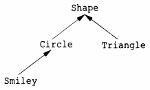
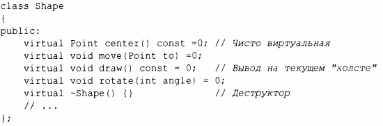
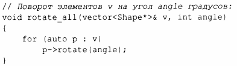
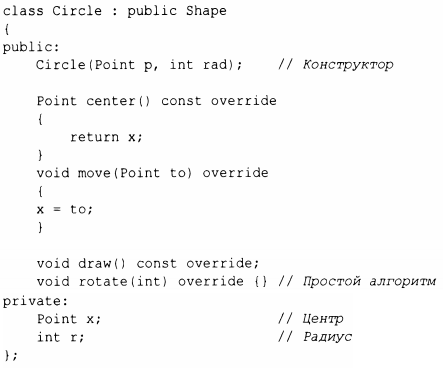
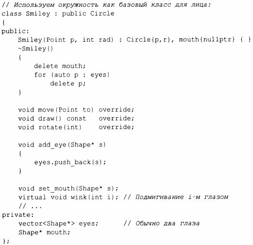
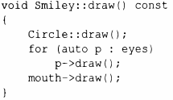

⇐4.4 Виртуальные функции Содержание 4.5.1 Преимущества иерархий⇒
Пример Container -очень простой пример иерархии классов. Иерархия классов представляет собой множество классов, упорядоченных в виде сетки, созданной наследованием классов (например, public). Мы используем иерархии классов для представления концепций, которые имеют иерархические отношения, такие как "пожарная машина - это разновидность автомобиля, который, в свою очередь, является разновидностью транспортного средства", или "смайлик - разновидность круга, который, в свою очередь, является разновидностью геометрической фигуры". Нередки огромные глубокие и широкие иерархии с сотнями классов. В качестве полуреалистического классического примера рассмотрим геометрические фигуры на экране.
Стрелки указывают отношение наследования. Например, класс Circle является производным от класса Shape. Иерархия классов обычно изображается растущей вниз от "самого базового" класса - от корня к (определяемым позже) производным классам. Для представления такой простой диаграммы в коде сначала нужно создать класс, который определяет общие свойства всех геометрических фигур:
Естественно, этот интерфейс является абстрактным классом; что касается представления, то ничто (кроме местоположения указателя на vtbl) не является общим для каждого Shape. В этом определении мы можем написать только общие функции, управляющие векторами указателей на фигуры:
Чтобы определить конкретную фигуру, мы должны указать, что это Shape, и определить ее конкретные свойства (включая виртуальные функции):
Пока что пример Shape и Circle не дает ничего нового по сравнению с примером Container и Vector_container, но мы можем продолжить:
Функция-член push_back() класса vector копирует свой аргумент в vector (здесь - eyes) в качестве последнего элемента, увеличивая размер вектора на единицу.
Теперь мы можем определить Smiley::draw() с использованием вызовов члена draw() базового класса и членов:
Обратите внимание на то, как Smiley хранит глаза в vector стандартной библиотеки и удаляет их в своем деструкторе. Деструктор Shape является виртуальным, а деструктор Smiley перекрывает его. Виртуальный деструктор необходим для абстрактного класса, потому что объект производного класса обычно обрабатывается через интерфейс, предоставляемый его абстрактным базовым классом. В частности, он может быть удален с помощью указателя на базовый класс, и в этом случае механизм вызова виртуальной функции гарантирует, что будет вызван правильный деструктор. Этот деструктор затем неявно вызывает деструкторы его базовых классов и членов.
В этом упрощенном примере задача программиста - поместить глаза и рот надлежащим образом в круг, представляющий лицо.
Мы можем добавлять элементы данных, операции или и то и другое, поскольку мы определяем новый класс путем наследования. Это дает большую гибкость - вместе с соответствующими возможностями для путаницы и плохого дизайна.